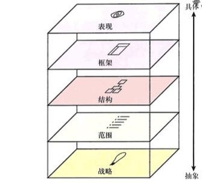
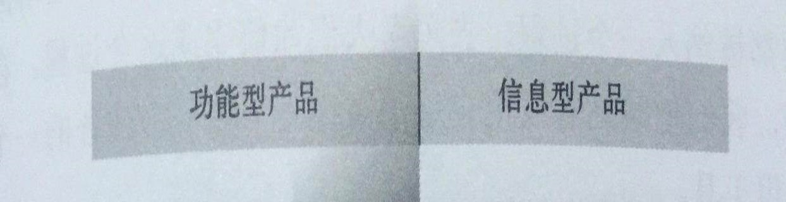
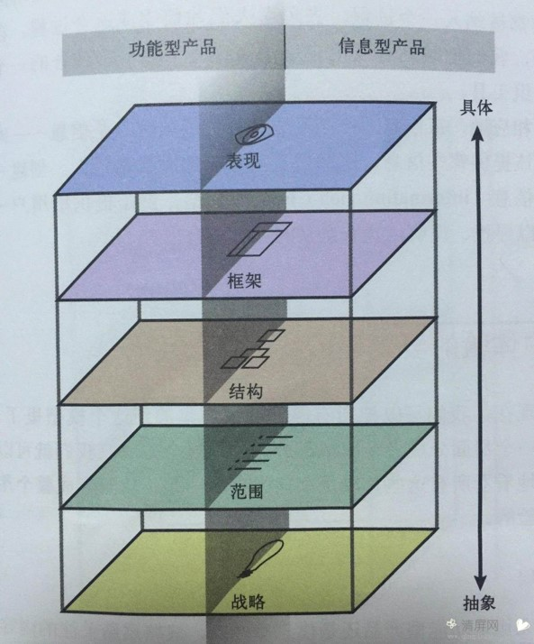
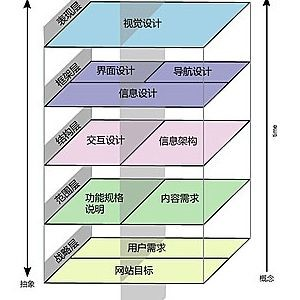

用户体验五要素
分享人：刘云刚
目录
1.战略层
2.范围层
3.结构层
4.框架层
1.战略层
什么是用户体验五要素
什么是用户体验：用户在使用产品过程中建立起来的一种纯主观感受。
用户体验的重要性：给用户一个积极、高效的体验，他们会持续使用你的产品，产品满足用户某方面的需求并来盈利，帮助人们提高生活质量，提高工作效率，改善人际关系，等等。
五要素：战略层、范围层、结构层、框架层、表现层
用户体验要素的作用：要素之间相互作用完成任务，创建一个总体的用户体验设计
适用场景：
设计：战略层→范围层→结构层→框架层→表现层
用户体验：表现层→框架层→结构层→范围层→战略层
2.范围层
用户体验五要素设计产品包含哪两种形式的产品： 信息型产品和功能型产品
什么是信息型媒介产品：关键词（信息），内容型的产品的实质就是连接人与内容的，所以这个内容从哪来，到哪里去，如何去，就显得至关重要了。
什么是功能型平台产品：关键词（任务），这类产品多从一个或者多个的用户目标出发，通过一个个的功能点来满足用户的一个又一个的需求，从而满足用户的终极需求。
3.结构层
战略层:成功的用户体验，其基础必须是一个被明确表达的战略。了解企业与用户对产品的期望和目标，能够促进用户体验的确立和制定。
范围层：我的产品需要有什么功能和内容？
结构层：（是抽象与具体之间的分界线，此处的决策更倾向于抽象化。）结构层确定各个将要呈现给用户的选项的模式和顺序。结构层是用来设计用户如何到达某个页面。并且要考虑他们完成事情之后能够去哪里。
框架层：产品的框架层：按钮、控件、照片、文本区域的位置。框架层是用于优化页面设计布局的。
表现层：视觉、听觉的体验设计。
4.框架层
战略层：
我们希望从产品得到什么？（产品目标）。。。用户希望从产品得到什么？（用户需求）
1、产品目标决定产品定位。
2、使用场景、用户群体决定用户需求。
范围层：
功能规格：对产品的“功能组合”的详细描述，需要何种模式的功能。
内容需求：对各种“内容元素”的要求的详细描述，需要何种顺序的信息展示。
结构层：
交互设计：影响用户执行和完成任务的元素。路线：快速、准确完成任务。
信息架构：关注如何将信息表达给用户的元素。指路牌：清晰、不迷路地找到信息。

框架层：
信息设计：用一种能“反映用户思路”和“支持他们完成任务”的方式来分类和排列这些信息元素。选择表现形式和分类排列的设计功能。
界面设计（功能）：选择正确的界面元素和正确的界面布局，让用户能快速找到目标功能。
导航设计（信息）：屏幕上元素的组合，允许用户在相关的内容之间自由的切换，找到足够多有效的信息。
表现层：
感知设计：“弥补网站框架层的逻辑排布”的视觉呈现问题。
具体工作中，产品做得原型尽量不要做高保真，影响视觉设计的最终结果，有些UI设计会按照你的原型去搞，会限制和固定设计的思路。讨论中UI设计：我是做视觉的，原型对我的影响确实很大。